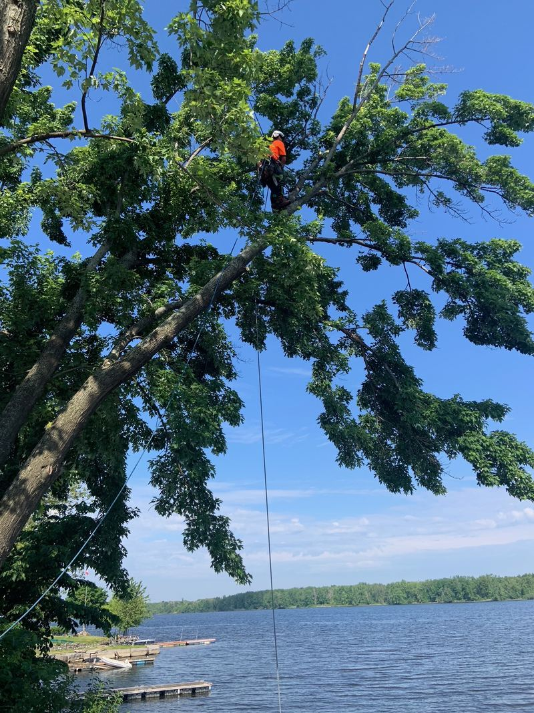

Le nettoyage de la cime enlève les branches mortes, mourantes et cassées. L'éclaircie enlève de façon sélective des branches vivantes pour laisser passer la lumière et l'air et réduire la prise au vent. Le relevage enlève les branches basses pour dégager un passage, et la réduction diminue la hauteur ou l'étalement de l'arbre. Si vous cherchiez « dégagement de la cime », vous voulez probablement un nettoyage ou un relevage. Chacun est un travail différent sur le même arbre : connaître le nom vous aide à demander le bon élagage d'arbres.

La cime, c'est tout ce qui se trouve au-dessus du tronc : les charpentières, les branches et le feuillage. Élaguer la cime change le poids, le vent et la lumière que l'arbre doit gérer, alors le même mot peut désigner des quantités de coupe très différentes. Les termes ci-dessous sont ceux qu'utilisent les arboristes, et une estimation claire devrait nommer celui qui s'applique à votre arbre.
Le nettoyage enlève les branches mortes, mourantes, malades et cassées, ainsi que celles qui se frottent l'une contre l'autre. Il n'éclaircit pas la croissance en santé. C'est la plus légère des quatre coupes et la première étape la plus courante, parce que le bois mort est ce qui risque le plus de tomber lors d'une tempête ou d'un dégel. Consultez notre guide des signes d'un arbre dangereux pour les repérer depuis le sol.
L'éclaircie enlève de façon sélective certaines branches vivantes, réparties uniformément dans la cime, pour réduire la densité. Elle laisse passer la lumière et l'air et diminue la prise au vent. Elle ne rapetisse pas l'arbre et ne doit pas le laisser dégarni à l'intérieur. Une éclaircie trop forte peut pousser l'arbre à produire des gourmands faibles : la quantité enlevée compte plus que le nom.
Le relevage enlève les branches basses pour dégager un trottoir, une entrée, une toiture ou une vue. C'est souvent le travail que les gens désignent par « dégagement de la cime ». Seules les branches les plus basses sont coupées, et il faut garder assez de cime vivante en haut pour que l'arbre ne soit pas déséquilibré.
La réduction diminue la hauteur ou l'étalement d'un arbre en recoupant chaque branche à une ramification latérale adéquate. On l'utilise quand un arbre est devenu trop grand pour son espace ou quand une longue branche lourde surplombe un toit. Ce n'est pas de l'étêtage. Les coupes se font à une branche latérale assez grosse pour prendre le relais, et l'arbre garde sa forme naturelle. La réduction est une coupe plus importante que le nettoyage ou l'éclaircie, et certaines essences la tolèrent mieux que d'autres.
L'étêtage coupe les branches en moignons sans égard à la structure. Il laisse des plaies ouvertes, provoque une poussée de croissance faible et rapide, et raccourcit la vie de l'arbre. Si une estimation dit seulement « couper court », demandez laquelle des quatre coupes ci-dessus est prévue.
Le bois mort peut être enlevé en tout temps. Pour l'élagage de branches vivantes, le moment compte pour certaines essences, comme l'explique notre guide quand élaguer les arbres à Ottawa. L'hiver, sans feuilles, la structure est plus facile à lire.
Le travail dans la cime se fait en hauteur, à la scie, souvent au-dessus d'une maison ou d'un fil. Notre guide sur l'élagage des grosses branches explique ce qui est réaliste depuis le sol. Tout ce qui dépasse la portée d'une échelle, ou qui est près d'un fil, est un travail d'équipe.
L'élagage qui entretient l'arbre et respecte les bonnes pratiques n'exige normalement pas de permis selon le Règlement sur la protection des arbres d'Ottawa, mais des coupes très sévères ou des dommages peuvent quand même compter comme une atteinte à un arbre protégé. Consultez le guide des permis si l'abattage est envisagé. Un arbre sur l'emprise municipale appartient à la Ville : appelez le 3-1-1.
Besoin d'élagage d'arbres à Orléans ou dans l'est d'Ottawa? Bisson Services s'occupe de l'élagage d'arbres partout à Ottawa et dans Prescott-Russell. Appelez au (613) 558-4806 pour une estimation gratuite, et nous vous dirons quelle coupe chaque arbre demande.
Le nettoyage enlève seulement les branches mortes, mourantes, malades ou cassées. L'éclaircie enlève aussi, de façon sélective, certaines branches vivantes en santé pour réduire la densité et laisser passer la lumière et l'air.
C'est un nom courant pour les travaux dans la cime. La plupart des gens parlent de nettoyage (enlever le bois mort) ou de relevage (enlever les branches basses). Demandez à l'arboriste de décrire exactement les branches qui seront coupées.
Le moins possible pour atteindre l'objectif. Une coupe importante stresse l'arbre. Un bon arboriste limite la quantité de cime vivante enlevée d'un coup et explique pourquoi.
Non. La réduction recoupe les branches à une ramification latérale adéquate et garde la forme naturelle. L'étêtage coupe les branches en moignons et laisse des repousses faibles et des plaies ouvertes.
L'élagage qui entretient l'arbre et respecte les bonnes pratiques n'exige normalement pas de permis selon le Règlement sur la protection des arbres de la Ville d'Ottawa, mais des coupes très sévères ou des dommages peuvent quand même compter comme une atteinte à un arbre protégé. Un arbre sur l'emprise municipale appartient à la Ville : appelez le 3-1-1.
Estimation gratuite sur place, service bilingue, urgence 24 heures. Bisson vise à répondre le jour même.